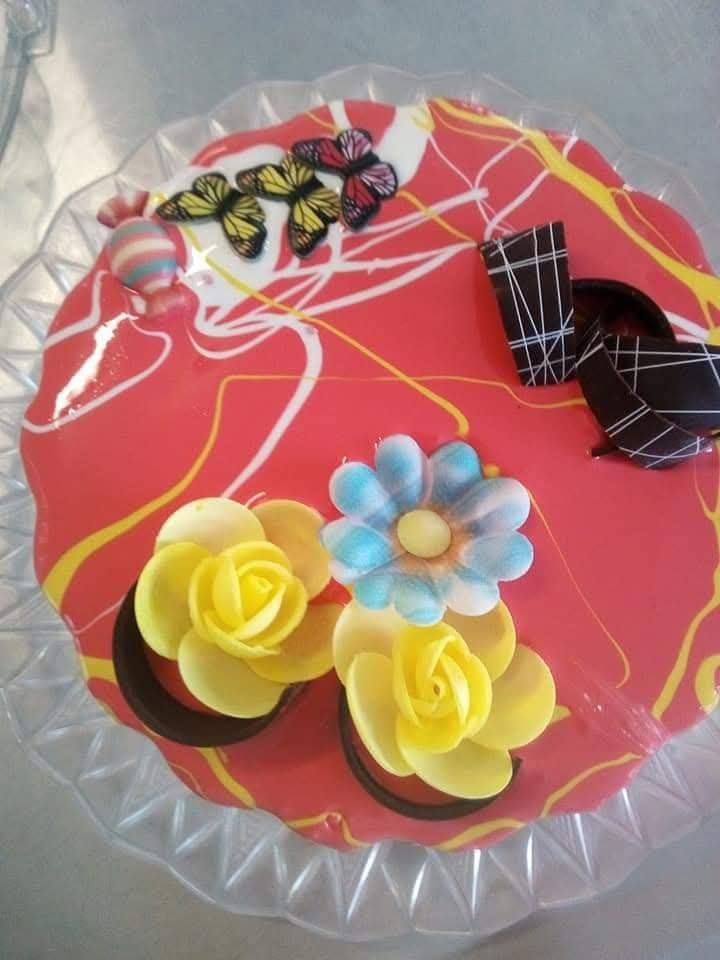
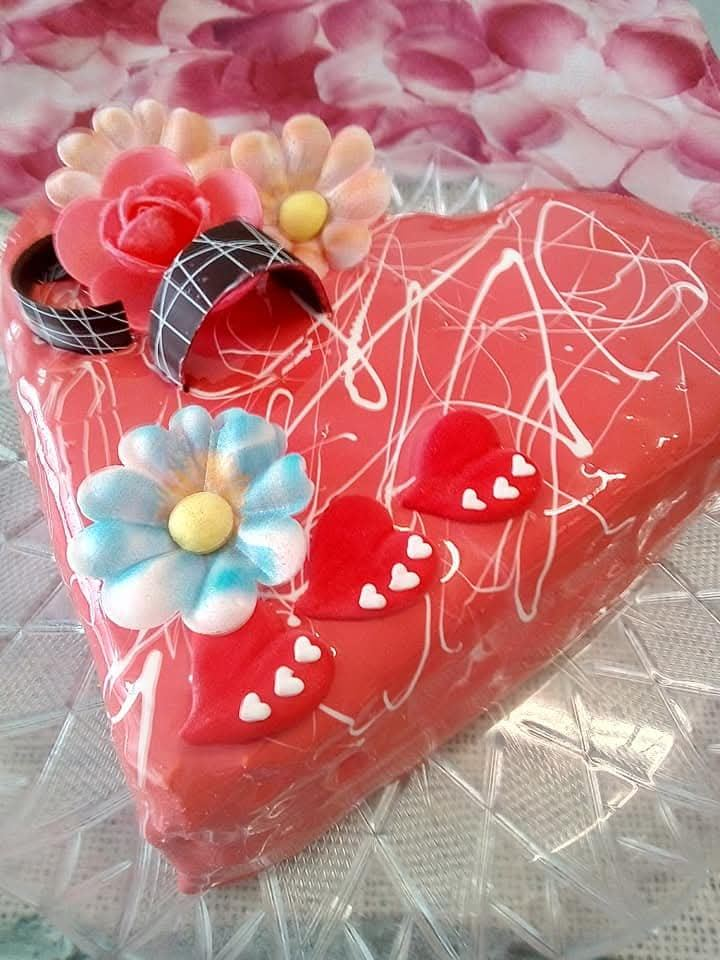
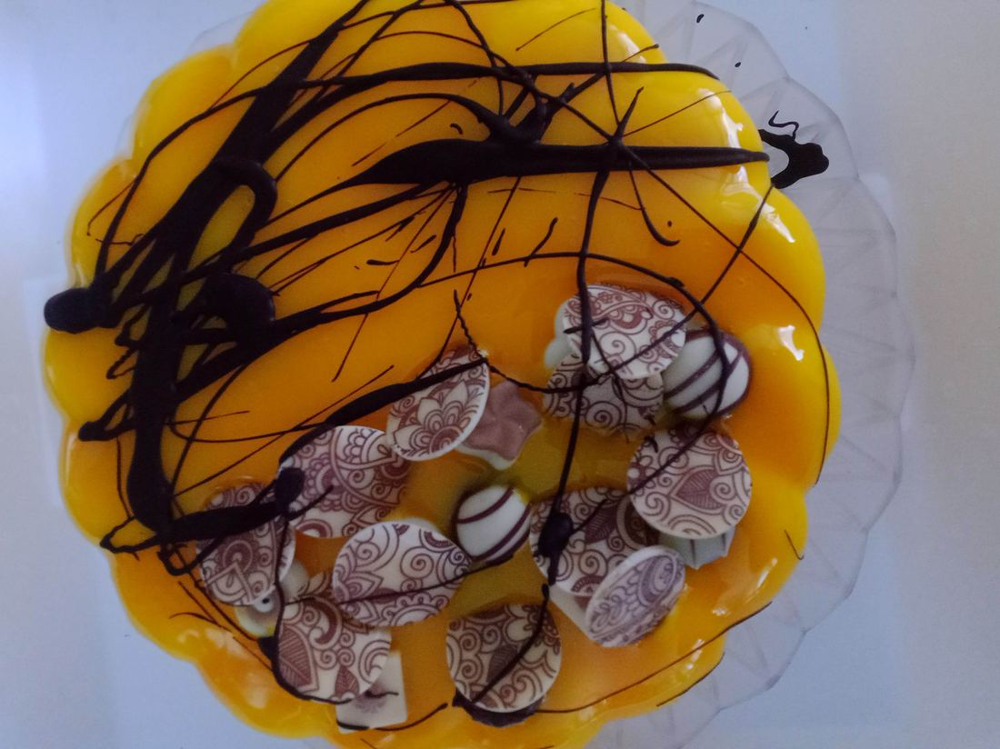
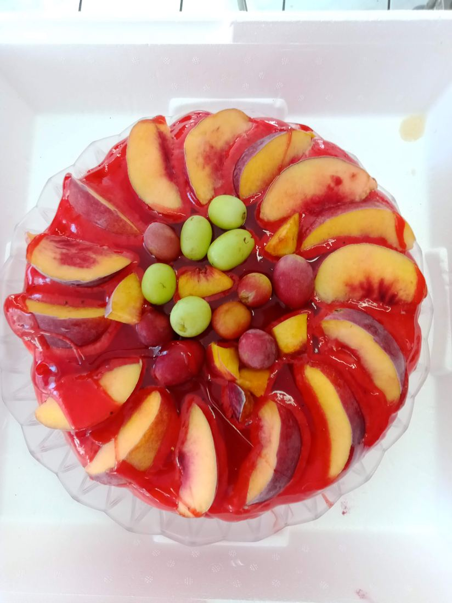
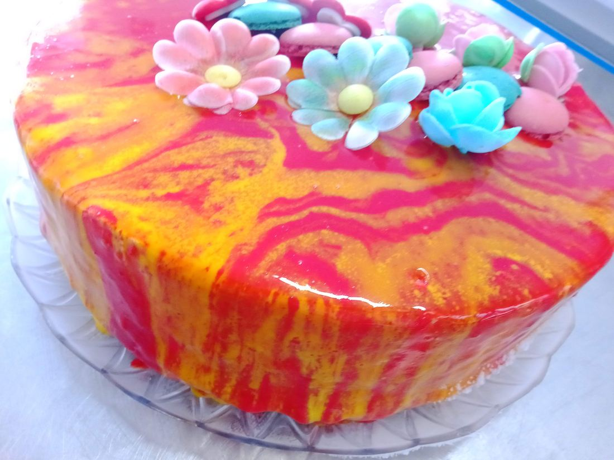
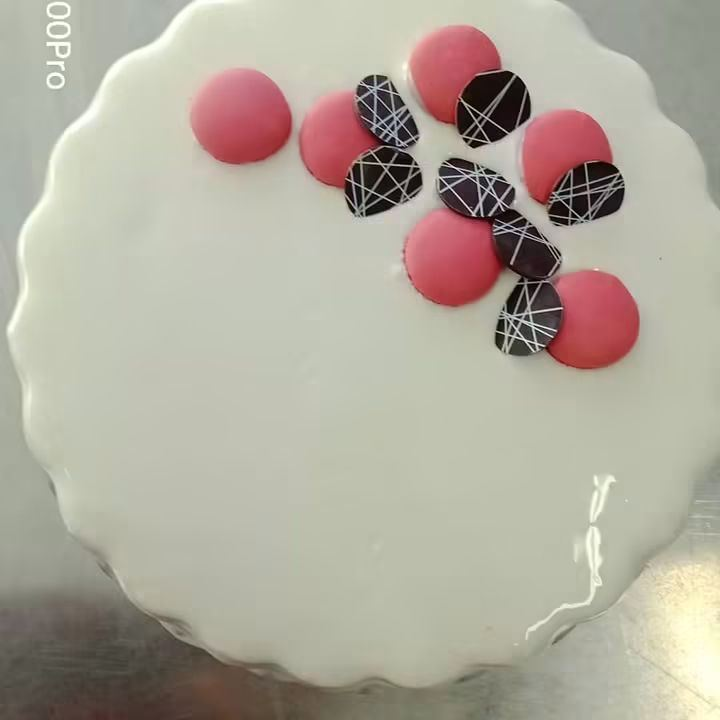
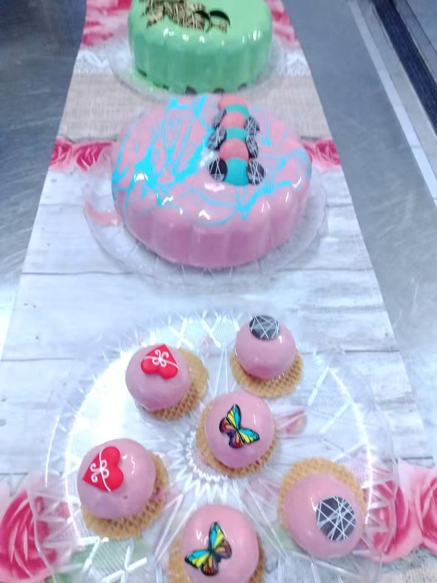

🎂 Torte gelato

Come si costruisce una torta gelato
Una torta gelato ben riuscita è prima di tutto una questione di equilibrio tra strati: ogni componente (basi, glasse, croccanti, bagne) contribuisce alla struttura finale e al modo in cui il prodotto si taglia e si scongela.
- Base/i di gelato: di solito 2-3 gusti diversi, scelti anche per contrasto di colore e consistenza (es. una base latte e una base frutta o cioccolato).
- Strato croccante: biscotto sbriciolato, wafer, pralinato o granella, spesso legato con burro di cacao o cioccolato per restare croccante anche da congelato.
- Variegature e glasse: aggiungono contrasto di sapore e un effetto visivo alle fette; vanno dosate per non appesantire troppo la struttura.
- Finitura esterna: glassa a specchio, spray effetto vellutato, o semplice glassatura — soprattutto una questione di presentazione e di conservazione in vetrina.
Errori comuni da evitare
- Basi troppo dure o troppo morbide rispetto agli strati adiacenti, che rendono difficile il taglio a temperatura di servizio.
- Eccesso di parti liquide/variegature che ghiacciano creando cristalli sgradevoli al palato.
- Scongelamento non uniforme: una torta va sempre riportata a temperatura di servizio (di solito -14/-16°C) prima di essere tagliata e servita.
Per scegliere le basi più adatte a una torta gelato, usa il confronto prodotti qui sul sito per valutare PAC, POD e solidi totali fianco a fianco.
📸 Le mie torte di gelato
Una selezione di torte gelato che ho realizzato negli anni: alcuni esempi concreti dei principi di strati, croccanti e finiture descritti qui sopra.









